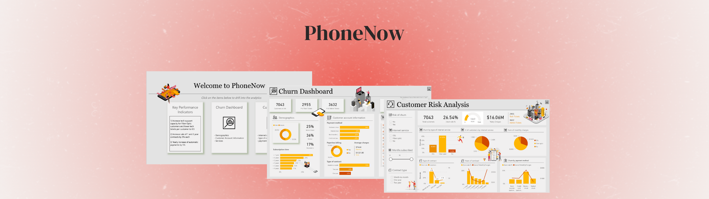
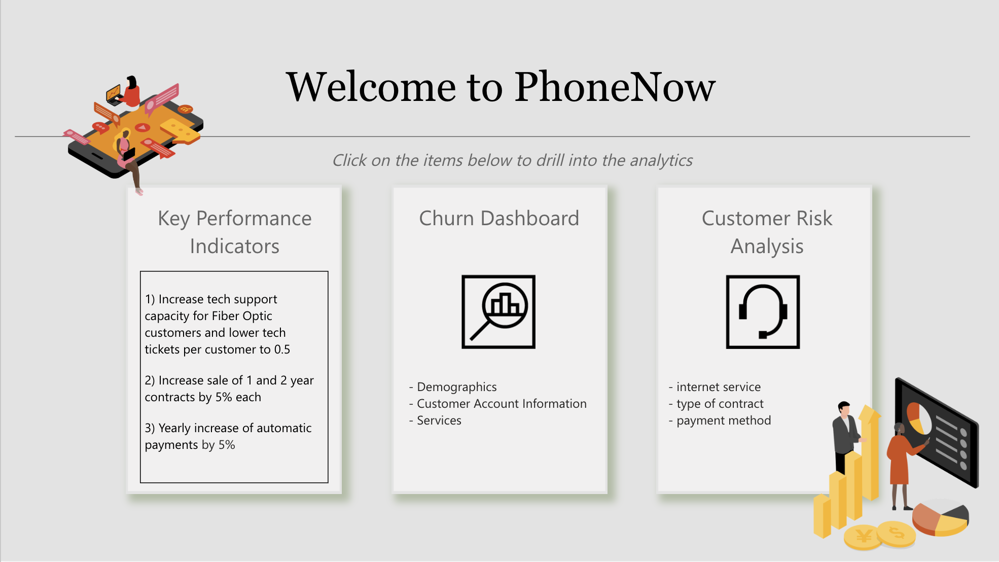
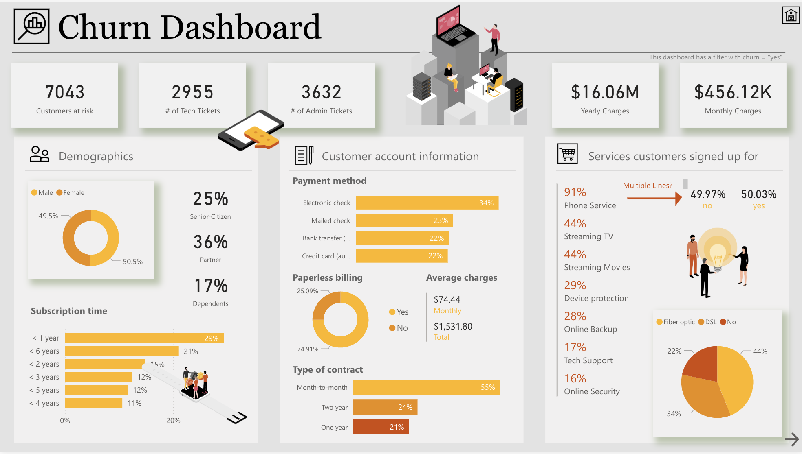
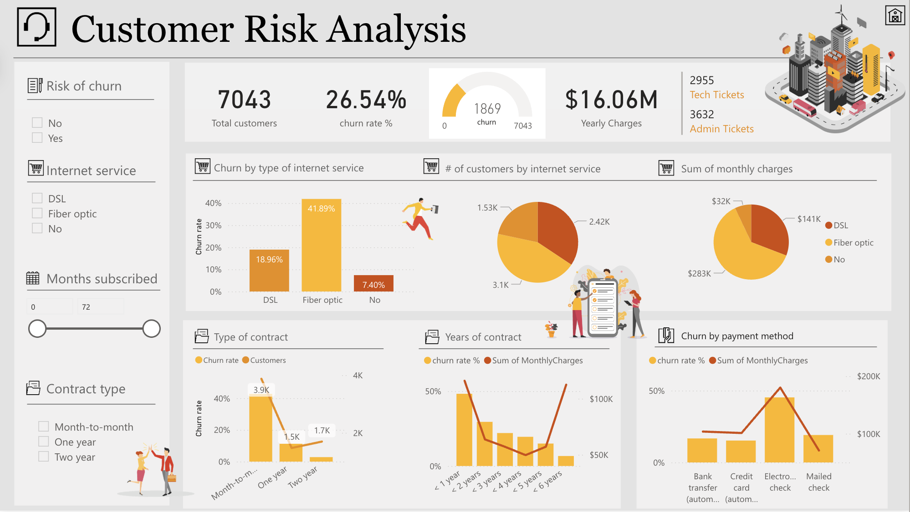

Analyzing Customer Churn Patterns and Risk Factors with Power BI
A three-section interactive dashboard that connects high-level KPIs to detailed churn drivers — helping PhoneNow identify at-risk customers and act on retention opportunities.

Overview
This project is an interactive Power BI dashboard designed for PhoneNow, a telecom company, to analyze customer churn behavior and identify key risk factors. The dashboard supports business decision-making by combining high-level KPIs with detailed churn and risk analysis views — structured across three main sections that escalate from summary to diagnosis.
The core challenge was making a complex dataset — spanning demographics, service types, contract durations, and billing behavior — legible enough for business stakeholders to act on directly, without requiring data analyst support for everyday decisions.
Key Performance Indicators
The KPI section provides a business-level overview of retention performance and contract health — metrics that leadership needs before diving into the detail. These indicators are designed to answer two questions at a glance: how are we performing overall, and are we moving in the right direction?

-
Retention and contract KPIs
Headline metrics include overall churn rate, contract growth targets, and support efficiency scores. These provide a quick directional read before stakeholders move into the deeper analysis pages — so they arrive at the detail with the right context already in mind.
-
Entry point to deeper views
The KPI page functions as a navigation anchor. KPI cards are designed to prompt questions ("why is this number lower than last quarter?") that the subsequent churn and risk pages are structured to answer.
Churn Analysis
The churn analysis page explores why customers leave across multiple dimensions: demographics, subscription length, contract type, payment method, and service usage. Visual comparisons between churned and retained customers make behavioral differences easy to spot and compare side by side.

-
Segment comparison
Side-by-side visual breakdowns make it clear which customer segments churn at higher rates — month-to-month contract holders, fiber optic users, and customers using electronic check payments consistently show elevated churn across the data.
-
Behavioral pattern detection
By filtering across service usage combinations, the dashboard surfaces patterns that wouldn't be visible in a flat report — for example, customers with multiple add-on services but no tech support subscription have meaningfully higher churn than those with tech support included.
Customer Risk Analysis
The risk analysis view focuses on identifying high-risk customer segments through cross-analysis of internet service types, contract duration, multiple service subscriptions, and billing behavior. This page moves from describing what happened to predicting what is likely to happen next.

-
High-risk segment isolation
Interactive slicers allow business analysts to isolate specific risk profiles — for example, fiber optic customers on month-to-month contracts without tech support. This segment-level view turns aggregate patterns into actionable retention targets.
-
Actionable output
The risk page is deliberately designed to end in a list of identifiable customer types, not just statistical summaries. The goal is to give retention teams a concrete starting point: specific customer profiles to prioritize for proactive outreach or contract upgrade offers.
Reflection
This project taught me the value of structuring a dashboard as a narrative — moving from "how are we doing?" to "where is the problem?" to "who specifically is at risk?" That progression makes the dashboard useful at every level of the organization, not just for analysts who already know the data well.
Dashboard as a decision flow
Structuring the three sections as a funnel — from KPIs to churn patterns to individual risk — made the dashboard useful for both high-level review and targeted operational decisions, without needing separate reports.
Specificity drives action
Aggregate churn rates don't motivate action. Knowing that fiber optic customers on month-to-month contracts without tech support churn at 2× the average does. The design prioritizes getting to that level of specificity as quickly as possible.
Interactivity as insight
Some of the most valuable insights in this dashboard only emerge when you apply multiple filters at once. Designing for interactive exploration — not just static viewing — was essential to making the data tell a complete story.